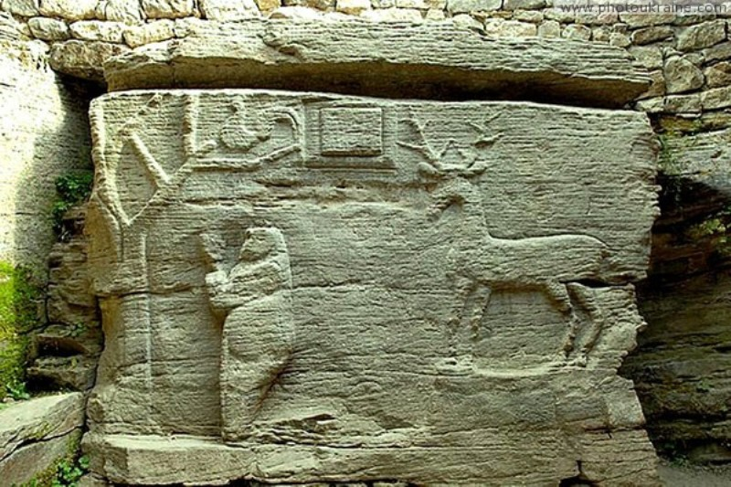
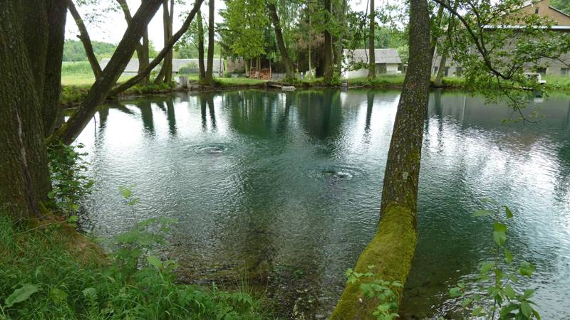
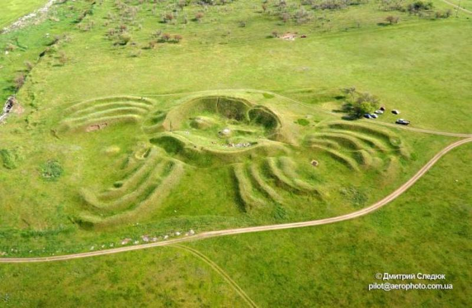
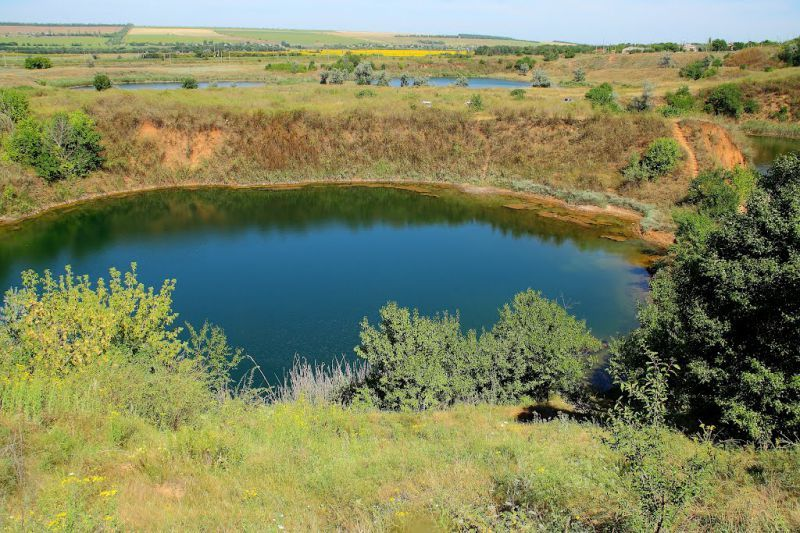
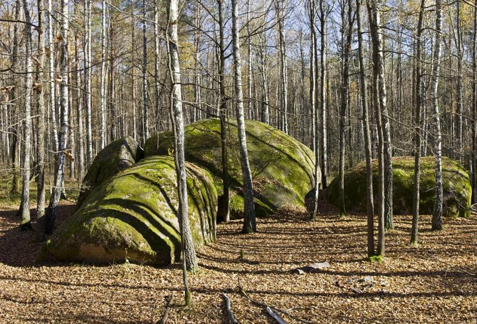

Бушанський скельний храм
Барельєф на стіні скелі у заповіднику “Буша” з моменту відкриття у 1824 році є темою дискусій вчених.
На гіллястому дереві без листя сидить птах, схожий на півня.
Під деревом зображено людину, яка молиться на колінах, а позаду людини на невеликому узвишші стоїть олень. Між ними, у верхній частині твору, розташована прямокутна рамка, надпис у цій рамці лише недавно вдалось відновити: “Азм єсмь Миробог, жрець Ольгов”.
Оконські джерела
Майже в центрі озерця Окнище розташовані два потужні джерела карстових вод.
Вода виходить з-під землі зі значним тиском, утворюючи на поверхні озера два куполоподібні фонтани.
Температура води цілий рік однакова — майже 9°С, навіть у суворі зими озеро не замерзало. Особливістю води є те, що вона не піддається газуванню. З часом джерела утворили невелике озеро завглибшки 3 м і площею 0,5 га.
Мавринський майдан
Мавринський майдан є комплексом валів, що мають правильну рельєфну форму. З висоти пташиного польоту майдан нагадує форму павука. У центрі цієї споруди розташоване насипне коло, в середину якого ведуть три “входи” та довгі хвилясті вали на зовнішній межі кола.
У день весняного рівнодення сонце заходить за горизонт якраз по центру однієї з западин — приблизно так само, як і у Стоунхенджі. Деякі вчені припускають, що степовий майдан є прадавньою обсерваторією.
Соледарське озеро
Маленьке озеро на місці соляної шахти є джерелом аномальних явищ. Місцеві дайвери встановили, що чим глибше спускатися на дно озера, тим більше піднімається температура його води. На поверхні вода зазвичай не прогрівається більше 20-25 °С, але на глибині 4-6 метрів температура піднімається до 30-40 °С, а ще глибше вода стає схожою на “рідке скло” і практично непрохідною для аквалангістів.
Камінне Село
Урочище є скупченням великих валунів, які займають близько 15 гектарів лісу, та є одним з найзагадковіших місць України. Існують дві гіпотези виникнення урочища. Згідно з однією, 20 тисяч років тому валуни були принесені льодовиком, за іншою — вони є залишками підніжжя древніх повністю зниклих гір, оголені льодовиком від ґрунтових нашарувань.
Багато каменів обрисами нагадують сільські будинки, тут є свій “майдан” зі “школою”, і навіть “церква”.